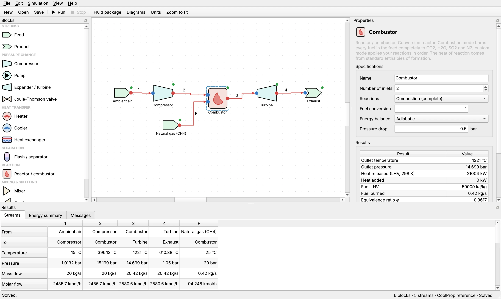
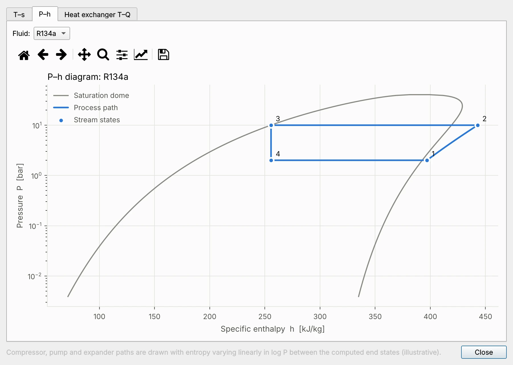
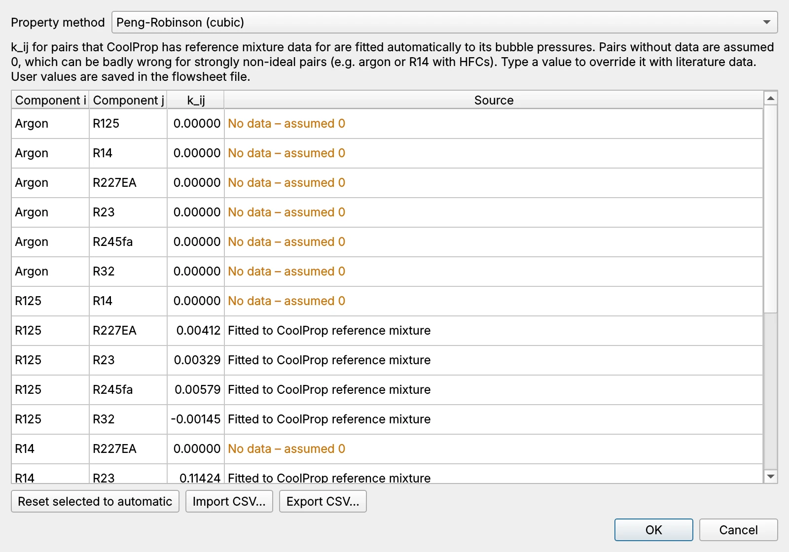
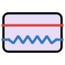
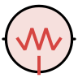
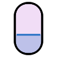
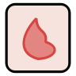

Draw a flowsheet. Solve the thermodynamics.
ThermoSolveDP is a free desktop simulator for thermodynamic cycles and processes. Connect compressors, turbines, heat exchangers, separators and combustors, press Run, and get every stream, duty and efficiency, with fluid properties from CoolProp.
For macOS (Apple Silicon and Intel) and Windows. Free and open source under the MIT license.
A process simulator you can read at a glance
Blocks snap onto a canvas, streams route themselves around them and are colored by phase, and every block shows its status after a run. Select anything to see its specifications and results.



Blocks
Thirteen unit operations cover power cycles, refrigeration, cryogenics, gas processing and combustion.
Compressor
Outlet pressure or ratio, isentropic efficiency. Warns about liquid at the inlet.
Expander / turbine
Produces work; flags wet expansion below 0.88 vapor fraction.
Pump
Raises liquid pressure with an isentropic efficiency.
Joule-Thomson valve
Isenthalpic throttling, with the mean JT coefficient.

Heat exchanger
Counter-current, solved by approach ΔT, outlet temperature, duty or UA. Finds internal pinches.

Heater and cooler
Outlet temperature, duty, vapor fraction or temperature change.

Flash / separator
Vapor–liquid equilibrium with phase compositions for mixtures.

Reactor / combustor
Complete combustion or your own reactions, with heat of reaction from formation enthalpies.
Mixer
Combines up to six streams, including different fluids.
Splitter
Divides a stream by fractions or by flow.
Feed and product
Pure fluids or mixtures from CoolProp's library of over 100 fluids.
Six worked examples, ready to open
Each opens from File › Open example and solves in seconds. The numbers below are what ThermoSolveDP calculates.
| Example | What it shows | Result |
|---|---|---|
| Rankine steam cycle | Closed cycle, wet-expansion warning | η = 34.0 % |
| R134a refrigeration | Vapor-compression cycle | COP = 3.08 |
| Linde-Hampson N₂ liquefier | Two coupled recycle loops, recuperator pinch | 6.9 % liquid per pass |
| Natural gas JT + flash | Ternary mixture, phase split and compositions | 15.6 % NGL by mass |
| Gas turbine with methane combustor | Combustion, LHV efficiency and heat rate | η = 36.2 % (LHV) |
| Mixed-refrigerant JT cryocooler | Seven components with Peng-Robinson | 146 W at −100 °C |
Under the hood
The engine is plain Python with no GUI dependencies, so flowsheets can also be scripted.
Thermosolve1.0 solver
Sequential-modular, with automatic tear-stream selection and Broyden, Wegstein or direct-substitution convergence. If a step overshoots into an impossible state, the solver backs off instead of failing.
Properties from CoolProp
Reference equations of state for pure fluids and fitted mixtures, plus Peng-Robinson and SRK for mixtures without data. Missing kij are flagged in every run.
Reactions with real heats
Formation enthalpies from NIST-JANAF. Methane LHV comes out at 50.01 MJ/kg, and the combustor temperature agrees with Cantera to within 1.6 K.
Results you can take away
Stream tables, block results and energy summaries export to CSV in your chosen units. Flowsheets save as small, readable .tpf files.
Download
Ready-made apps need nothing else installed. The source package runs with Python 3.12 or 3.13 on any platform.
Install the app
- Download the file for your computer and open the zip.
- Mac: drag ThermoSolveDP.app into Applications. Windows: move the ThermoSolveDP folder somewhere permanent and open ThermoSolveDP.exe.
- Open it once past the security check (below).
- Choose File › Open example › Rankine steam cycle and press Run. The efficiency should read 34.0 %.
Or run from source
- Install Python 3.12 from python.org. On Windows, tick “Add python.exe to PATH”.
- Unzip the source package into a folder you keep.
- Run
run_mac.commandorrun_windows.bat. The first start installs everything in about two minutes.
Full steps are in INSTALLATION_INSTRUCTIONS.txt.
The first time you open it
ThermoSolveDP isn't signed with a paid Apple or Microsoft certificate, so both systems ask before running it the first time.
Mac: if macOS says it “could not verify” ThermoSolveDP, click Done, open System Settings › Privacy & Security, and click Open Anyway.
Windows: if “Windows protected your PC” appears, click More info, then Run anyway.